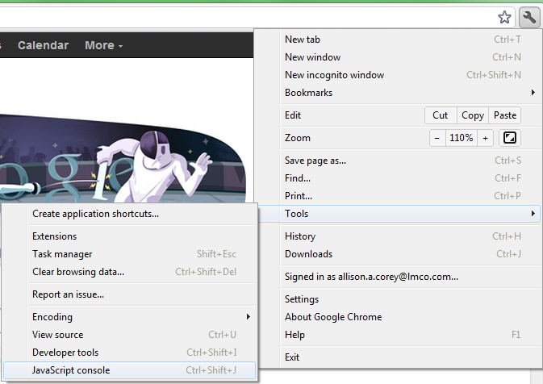
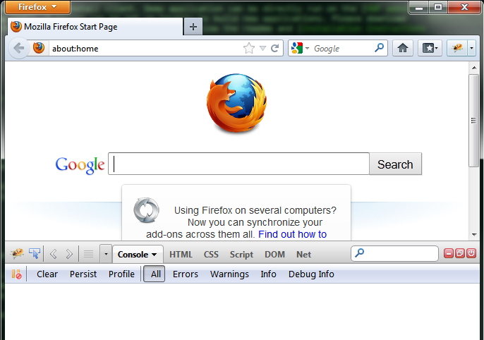
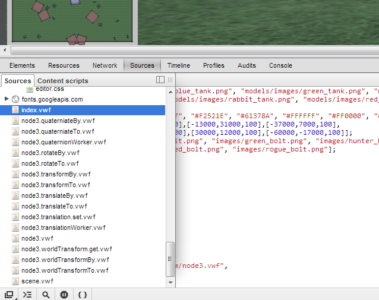

Download and extract the latest Windows build from the Downloads page.
Install Node.js.
Launch a command prompt and navigate to your vwf folder.
Edit npm configuration settings:
npm config set registry http://registry.npmjs.org/
Note: You may also need to set a proxy if required by your network:
npm config set strict-ssl false
npm config set proxy http://yourproxy.com:80
npm config set https-proxy http://yourproxy.com:80
Install all the prerequisites for the VWF server:
npm install
Start the server:
npm start
Navigate to "localhost:3000" to see the sample duck application from your local machine.
NOTE: On Mac OS X, please make sure you have Xcode Command Line Tools installed prior to executing the script.
Execute the following command at your terminal/shell prompt:
$ curl -L http://get.virtual.wf | sh
Launch a command prompt window and create a new VWF application:
$ vwf create MyApp
Change into your new folder application, and start the server.
$ cd MyApp
MyApp$ vwf
For additional VWF app examples, download the vwf-apps repo, and unzip to your public directory.
The following resources may be helpful for troubleshooting any issues that arise.
Verify installation instructions were followed.
Load an application, and verify all the requirements are met on the loading screen.
Open the developer console to check for any error messages.
In Google Chrome, press Ctrl+Shift+J or select the tools menu -> Tools -> Developer Tools -> JavaScript Console.

In Mozilla Firefox, download and install Firebug. Select the bug icon in the upper right of the browser to run, and then select the Console window.

If you haven't already built your first VWF app by following our tutorial, we highly recommend it!
This section will expand upon what you learned in the tutorial and run through some VWF concepts that will help you create your VWF apps.
VWF consists of two pieces:
VWF enables one to create:
The VWF ecosystem is everything that exists to help developers create components and applications. Many of the items listed in the Ecosystem circle are works in progress.
VWF allows you to ignore the complexity of sharing state between multiple users. You focus on the logic of your app, and as long as you follow VWF conventions, nothing else must be done to achieve a synchronized state across multiple users.
Let's look at the anatomy of a VWF app to understand a little of how it works under the hood.
VWF has a model-view based architecture. Views exist for each client joined in the app. Each view provides input into a model that keeps track of the state of the simulation.
The single model, or shared state, of the application has multiple copies that represent the shared simulation.
Each client then has their own replicated model that they take with them. The model, however, remains the same as the one that every other user is viewing. All clients show the same state with each having an identical copy of the app. The app are separately but simultaneously updated to retain identical states.
The app then is a state machine. The same state machine is in different locations (different clients). If the state machines all have the same properties and children, they will all move to the same successive state.
A client's browser may have multiple views. For example, a user may see a renderer view and an editor view in their browser window. The renderer view shows a 3D visualization of the model state, and the editor view shows the hierachy of the scene and the pieces that make it up such as it's properties and children.
External inputs from one user get thrown "across the moat" into the shared simulation (model) [1]. The model deflects incoming input from a view, and sends it directly to the reflector [2]. The reflector can then send out the information to all of the replicated models [3]. Thus all inputs to a model happen identically on the timeline to all clients within the application.
The architecture separates external input from internal input. All external input (ie. user input from a view), once received by the model is deferred to the reflector, which then sends it out to everyone. However, the model is free to make any additional state changes (ie. internal input) provided that it was caused by something internal to the model. This would include things such as setter methods that can manipulate other internal properties.
The application's main model file is usually named index.vwf.yaml. The index part can actually be replaced with any name, but if it is named index.vwf.yaml, the filename is not necessary in the browser url (only the path leading to it). It can actually also be a .json file instead (index.vwf.json). We use .yaml because of its human-readableness.
Everything in the model is automatically syncrhonized across all users. Let's take a look at how the model is composed.
A node is the atomic unit of state in the VWF model. The application's entire model state is comprised of a tree of nodes.
A tree of nodes that forms a functional unit (for example, a tree composed of a car node that has four children tire nodes) is called a component.
Since a component can actually be made from a single node (since that is technically a tree ... just a very simple one), you will sometimes catch us calling individual nodes components.
To summarize: the model side of a VWF application is made up of one or more components, which are in-turn made up of one or more components. Like this:
Additionally, components may extend prototype components, and will inherit their properties, methods, and events. A prototype may have multiple components that extend it in an application. Like this:
Since components are such a big deal in VWF, we'll come back to them in more detail in the components section where we show you the structure of a component definition. And if you want to see what components already exist inside VWF that you can use as prototypes in your applications, check out the prototypes section.
But for now, let's move onto talking about the other half of a VWF application ... the view.
The application's main model file is usually named index.vwf.html. Again, just like the model file, it can actually be named anything, but the part before the vwf.html needs to match that part of the model files name.
The view side is what the user interacts with. It contains the logic for anything that is user-specific (like the logic for a user controlling their personal avatar, etc). Therefore, the view is not synchronized across every user.
The main file is an html file, and it is the primary means for creating 2D elements in your application (3D elements are handled by the three.js driver, but that is a topic for later). From this file you may also include untold numbers of .js files to implement view-side logic (like the aformentioned user controlling their avatar).
In a VWF application, the model does not know that the view exists. The view knows that the model exists and can listen for changes to it (and perform some view-side logic as a result). It can also take user input and create its own changes to the model by setting properties and calling methods (etc) on those components we mentioned in the last section.
Components define the behavior, state and visual representation of an object and are the basic building blocks of VWF. Components make up a hierarchical structure, with each component acting as the parent or child to another component. At the root of the structure is the application, which is also a component, and is created automatically when the application loads.
There are eight parts that make up a component, seen here as a skeleton in YAML.
---
extends:
implements:
source:
type:
properties:
methods:
events:
children:
scripts:
Each part is optional and only needs to be included in the component definition if that part needs to be customized in the component. All relative paths are resolved using the current component as the base.
This specifies the URI or descriptor of the prototype component that is extended to make the new component. All behaviors, properties, methods, events, children and scripts are inherited by the component. The default prototype is http://vwf.example.com/node.vwf.
To specify a prototype using a URI, simply provide the URI.
extends: http://vwf.example.com/path/to/prototype.vwf
Since a prototype is also a component, it can be specified using the same format.
extends:
extends:
implements:
source:
type:
properties:
methods:
events:
children:
scripts:
See prototypes for more information.
This specifies the URIs of components that will be used as behaviors. All behaviors, properties, methods, events, children and scripts are inherited by the component, allowing functionality to be added from a separate file.
implements:
- http://vwf.example.com/path/to/behavior.vwf
See behaviors for more information.
The source and type allow the component to load a seperate data blob, usually in the form of a 3D model or image. Source is the URI of the data, and type is the MIME type. If type is not specified, it will default to the MIME type taken from the server's response.
source: model.dae
type: model/vnd.collada+xml
Properties are the public variables of the component. The component inherits properties from its prototype and any behaviors. Initializing a property will override any default values from the prototype or behavior.
The declaration for a property provides only a name, and an optional value.
properties:
aProperty: value
Properties can also be declared with accessor functions that allow the component to detect changes, allow only acceptable values, or serve as a proxy for another property.
properties:
aProperty:
set: | # calculate and set the value
this.aProperty = value
get: | # calculate and return the value
return this.aProperty
value: # the value is available to the accessor functions
value
Methods are the public functions of the component. The component inherits methods from its prototype and behaviors. Redefining those methods here will override the inherited ones.
The method declaration only provides the body of the method.
methods:
aMethod: |
// method body
The extended method specifier allows named parameters. Additional parameters can still be parsed out of the arguments object when needed.
methods:
anotherMethod:
parameters:
- one
- two
body: |
var three = arguments[2];
this.something(one, two, three);
Methods can also be declared empty, and intialized in a script later.
methods:
aMethod:
scripts:
- |
this.aMethod = function(one, two, three) {
}
Events define the outgoing messages a node can trigger. The component inherits events from its prototype and behaviors.
The event specifier only provides the name of the event.
events:
anEvent:
The extended event specifier describes the arguments passed to the event. As with methods, additional parameters can still be parsed out of the arguments object in the event handler.
events:
anotherEvent:
parameters:
- one
- two
To listen for events, a javascript function that matches the event name is added to the Scripts section of the component.
events:
anEvent:
scripts:
- |
this.anEvent = function() {
}
VWF also defines several dispatched events. These are triggered when outside actions, such as a key press or mouse click occur. When one of these events occurs, the system automatically finds any nodes that have been definined as triggering the event, and dispatches the event from those nodes. Currently, the dispatched events defined by VWF are:
keyDownkeyUppointerClickpointerDownpointerOverpointerHoverpointerOutpointerMovepointerUppointerWheelChildren are instances of other components that are attached to this component. A child can be a simple reference to a separate component, or the reference can include a configuration. The format for a child specification is the same as for a component.
children:
childFromURI: http://vwf.example.com/path/to/component.vwf
childFromDescriptor:
extends: http://vwf.example.com/path/to/component.vwf
properties:
something: value
childFromDescriptorDetailed:
extends: http://vwf.example.com/path/to/prototype.vwf
implements:
- http://vwf.example.com/path/to/behavior.vwf
- http://vwf.example.com/a/different/behavior.vwf
source:
asset.dat
type:
mime/type
properties:
name:
descriptor
another:
descriptor
methods:
name:
descriptor
another:
descriptor
events:
name:
descriptor
another:
descriptor
children:
- name:
component
- another:
component
scripts:
- specifier
- specifier
Scripts define the component's internal behavior and can be used to create and use private variables and methods, and event handlers. Currently the only language supported for scripts is JavaScript.
scripts:
- |
var aVariable;
this.aFunction = function() {
...
}
Inside a script this always refers to the component that owns the script. Other components can be accessed by navigating up or down the component hierarchy using this.parent and this.children.childName. VWF also defines an initialize function that is automatically executed when a component is initialized. In order to use this function, define it like any other function.
scripts:
- |
this.initialize = function() {
...
}
The various parts of a component can also be modified from JavaScript after the component has been initialized as a node. VWF defines several functions to make these changes.
New properties can be added using the following syntax.
this.properties.create("propertyName", value);
The first parameter is the name of the new property, and the second is its initial value. There are also two optional parameters that customize the getter and setter of the parameter. These are passed in as strings.
this.properties.create("propertyName", value, "return this.propertyName;", "this.propertyName = value;");
New methods can be added using the following syntax.
this.methods.create("methodName", [methodParameters,...], methodBody);
The first parameter is the name of the new method, the second is an array of any parameters the method will take, and the third is the body of the method, as a string.
Creating a new event uses the following syntax.
this.events.create("eventName", [eventParameters]);
The first parameter is the name of the new event and the second is an array of any parameters the event will take.
New event listeners can also be added.
this.events.eventName = this.events.add(function() { ... }, phases, this.children.listeningNode, callback /* listenerID */);
The first parameter is the function that will be executed when the event occurs.
The second parameter is optional and defaults to "bubble". Setting phases to "capture" will prevent the event from propagating to other nodes.
The third parameter will be used as the this value for the event and defaults to the node firing the event. Setting the parameter to the node listening for the event allows the listener function to find its node more easily. This parameter is also optional.
The final parameter is an optional callback function to receive the ID assigned to the listener. The listener ID is used to remove the listener from the event.
this.events.eventName = this.events.remove(listenerID);
A component can be written as a JavaScript object in the following format.
var component = {
extends: "http://vwf.example.com/path/to/prototype.vwf",
implements: ["http://vwf.example.com/path/to/behavior.vwf"],
properties: {
aProperty: value
},
methods: {
aMethod: function( parameter, ... ) { ... },
anotherMethod: function( parameter, ... ) { ... }
},
events: {
anEvent: function() { ... },
anotherEvent: function() { ... }
},
children: {
childFromURI: "http://vwf.example.com/path/to/component.vwf",
childFromDescriptor: {
extends: "http://vwf.example.com/path/to/component.vwf",
properties: {
something: "value"
}
}
},
scripts: [ "this.aFunction = function() { ... }"]
};
From inside an existing node, the new component can be created using the following syntax.
this.children.create("componentName", component);
The first argument is the name of the new component to be created, and the second is the JavaScript object for the component itself. The new component will be created as a child of this, and will be treated the same as any other children that were already present.
Children can also be deleted. The delete function takes the JavaScript object of the child that will be deleted.
this.children.delete(this.children.component);
The camera capability provides the users a viewpoint into the app. Every app automatically creates a camera as part of the scene. This camera can be accessed in javascript through the camera property of the scene node, or through the editor.
New cameras can be created by creating a node that extends http://vwf.example.com/camera.vwf.
var newCamera = {
extends: "http://vwf.example.com/camera.vwf"
};
this.children.create("newCamera", newCamera);
See components for more information about creating new nodes.
The cameraType property controls whether the camera is a persepective or orthographic camera. With a perspective camera, the further away an object is, the smaller it will appear. Orthographic cameras always display objects as their actual size. cameraType defaults to perspective and can be set using the following syntax.
this.children['newCamera'].cameraType = "orthographic";
The camera component extends from node3, and inherits the transform properties, such as translation and rotation.
The translation property controls the position of the camera. Changing this property will move the camera to the new coordinates, and the view will automatically update with it. translation defaults to [ 0, 0, 0 ] and can be set using the following syntax. The coordinate system defaults to +x to the right, +y forward, and +z up, if no rotation has been applied.
// Moves the camera to 100 on the x-axis, -20 on the y-axis, and 30 on the z-axis
this.children['newCamera'].translation = [ 100, -20, 30 ];
The rotation property controls the direction the camera is pointing, as an offset from the default orientation. Changing this property will rotate the camera and automatically update the view. The value takes the from of [ x, y, z, angle ] where the amount rotation around an axis is axis * angle.
this.children['newCamera'].rotation = [ 1, 2, 0.5, 90 ];
// From looking down the positive y-axis, rotate 90 degrees
// around the x-axis, rotation 180 degrees around the y-axis
// and 45 degrees around the z-axis.
Note that the x, y and z values in the rotation array are automatically normalized to a unit vector. So after the above example, reading the value of rotation would return [ 0.4364357888698578, 0.8728715777397156, 0.21821792423725128, 90 ].
The near and far properties are used to control the clipping plane. far controls how far away from the camera another node can get before it is no longer displayed and near property controls how close to the camera another node can get before it is no longer displayed. The values of near and far are restricted so that 0 < near < far. They can be set with the following syntax.
this.children['newCamera'].far = 10000;
this.children['newCamera'].near = 1.0;
near and far also control the view buffer. The ratio of far / near should roughly match the size of the world, in order to have accurate depth calculations and avoid overlapping models.
The lookAt property affects how the camera moves. If it is set to the id of another node, that node will always be at the center of the cameras view. If the position of the camera changes, the camera will automatically stay pointed at the other node. lookAt can only be set to a valid id, and defaults to "". It can be set using the following syntax.
this.children['newCamera'].lookAt = this.children['interestingNode'].id;
The application uses the activeCamera property of the scene to determine which camera to use as the main viewpoint. Other cameras can be created, but they will not affect what is displayed in the browser unless they have been set as the active camera. Cameras in the model are shared by all clients, and activeCamera will be seen by all clients, unless they switch to a different one in their private view. Setting activeCamera to the id of a camera will automatically switch the view that is displayed in the browser to the view of that camera.
// this is the scene
this.activeCamera = this.children['newCamera'].id;
VWF provides control of lighting within an app or default lighting if none is specified. There are three basic light types that can be created within the framework. Each light has properties associated with it that can be manipulated, including attenuation, effects, and shadows. A complete list of light properties can be found under light in the Application API.
A point light is represented by a point source in 3D space, and emits light in all directions. The closer an object is to the light source, the more illuminated it becomes.
Omni1:
extends: http://vwf.example.com/light.vwf
properties:
lightType: "point"
translation: [ -150, 150, 150 ]
Directional lights equally illuminate all objects from a given direction. An application should only have a small number of directional lights if needed, as computations for directional lights need to be done on all pixels on the screen.
Dir1:
extends: http://vwf.example.com/light.vwf
properties:
lightType: "directional"
rotation: [ 1, 0, 0, -10 ]
Spot lights emit light in a cone shape instead of a sphere. Other than that, spot lights and point lights share the similar properties. Spot lights also have the additional properties of spotCosCutOff and spotExponent, as described in the light API.
Spot1:
extends: http://vwf.example.com/light.vwf
properties:
lightType: "spot"
spotCosCutOff: 0.95
spotExponent: 10
translation: [ -150, 150, 150 ]
Specular reflection is the reflection of light from a surface where the ray is reflected in a single direction.
Diffuse reflection is the reflection of light from a surface where the ray is reflected at many angles.
Prototypes are the base component types for inheritance in the Virtual World Framework. A prototype has the same structure as a VWF component, and contains common properties, methods, and events.
A component can inherit from a prototype by using the extends keyword and specifying the URI of the prototype component. All behaviors, properties, methods, events, children and scripts are inherited by the component.
extends: http://vwf.example.com/path/to/prototype.vwf
The default values for properties are defined in the prototype file. These properties can be overridden in the component definition file, or left alone to keep the default value. The same is true for methods and events, which can be extended in the component definition.
The default prototype for all components is http://vwf.example.com/node.vwf.
Prototypes can be housed on any server, and any URI passed to the extends keyword. Common VWF prototypes use a URI of vwf.example.com.
node2.vwf - base type for 2D componentsnode3.vwf - base type for 3D componentscamera.vwf - base type for cameraslight.vwf - base type for lightsmaterial.vwf - base type for materialsscene.vwf - base type for a sceneThe Application API covers the complete list of VWF prototypes and their property, method, and event definitions.
A behavior is a component that is used to add functionality to another component. It is referenced from a seperate file, allowing multiple components to reuse the same behavior. To use a behavior, add an implements section to the component with the URI to the behavior.
implements:
- http://vwf.example.com/path/to/behavior.vwf
When a behavior is loaded, all behaviors, properties, methods, events, children and scripts are inherited by the new component. All the inherited functionality can be used as part of the component. Behaviors can also use properties from the component that implement the behavior. For example, in this behavior, someMethod will perform an action based on the value of behavior-someProperty, which defaults to true. The convention for properties from the behavior is to prefix the property name with the name of the behavior, to avoid accidently overriding the value with a property from the implementing component.
---
properties:
behavior-someProperty: true
methods:
someMethod: |
if(this.behavior-someProperty && this.anotherProperty) {
// Do something
}
else {
// Do something else
}
anotherProperty is defined in the implementing component, but is still usable in the behavior. If the component that is implementing the behavior needs behavior-someProperty to be false, it simply overrides the value in its own properties.
---
implements:
- http://vwf.example.com/path/to/behavior.vwf
properties:
behavior-someProperty: false
anotherProperty: true
scripts:
- |
this.doSomething = function() {
this.someMethod();
}
When someMethod executes, it will read the overridden value of behavior-someProperty, and go into the else statement.
The primary way to accomplish animations in VWF is the animation behavior. All components that extend node3 automatically implement the animation behavior, which provides standardized methods and properties for creating and executing an animation.
In order to create an animation on a node, the animationUpdate method needs to be implemented. This method is called each time the animation time changes, and is used to update the node to the correct state for that time.
scripts:
- |
this.animationUpdate = function(time, duration) {
// Animate the node. For example, update the translation based on the time
this.translateBy([0, 0, 1 * time], 0);
}
The animation can then be started by calling the animationPlay method and stopped by calling animationStop.
Common properties used to customize the animation include:
animationDuration - The length of the animationanimationRate - The animation playback rateanimationLoop - Whether or not the animation should replay after reaching the endA full list of methods and properties can be found under animation in the Application API.
Animations defined in the collada document will also be loaded and available to the framework. They are controlled the same way as animations created in a component, except there is no need to implement an animationUpdate method, since the animation information is pulled from the collada file.
Common properties used to customize collada animations include:
animationStartTime - The time the animation should start at. Used to play a subsection of the animation.animationStopTime - The time the animation should stop at. Used to play a subsection of the animation.animationStartFrame - Equivalent to animationStartTime, but in frames, instead of seconds.animationStopFrame - Equivalent to animationStopTime, but in frames, instead of seconds.fps - The frames per second the animation should play at.Animations can also be created using the future call. The VWF future call can be used to run a method at a specified time in the future. This call can be inserted into the method call chain, and a parameter passed with an amount of time from the current point for when the method should be called. An example of the future call is shown below.
methods:
methodName: |
if( criteriaMet )
{
doSomething();
this.future( 0.05 ).methodName();
}
The future call schedules the next step. The parameter passed to the function call can be raised or lowered to smooth or optimize the animation, respectively.
Future calls may also be used for property assignment or to fire an event at a given time in the future.
this.future.eventName();
this.future.propertyName = value;
Two dimensional components may be added to any application via HTML. When an application loads, the framework automatically looks for an HTML file of the same name. For instance, if your application is entitled application.vwf.yaml, VWF will look for a file in the same directory called application.vwf.html. This HTML is of a standard format, and can, in fact, be loaded standalone in a browser.
A few additions to the file can attach the 2D content as an overlay directly over the VWF view, and scripts can be added to attach the HTML content to the application pieces itself.
The first step is to create the HTML content as you'd like it to appear on the screen. In the example below, everything contained within the first div can stand alone as it's own HTML file, with standard css rules applied.
<body>
<div id="wrapper" class="wrapper">
<div class="toolstyle" id="toolbar">
<img id="icon1" src="images/icon1.png" style="border:3px solid red" alt="icon1"
onclick="setMode('mode1')"/>
<img id="icon2" src="images/icon2.png" style="border:2px solid black" alt="icon2"
onclick="setMode('mode2')"/>
</div>
</div>
<script type="text/javascript">
$('#wrapper').appendTo('#vwf-root');
</script>
</body>
In order to attach the content as an overlay to the application, we've added an additonal script tag, that appends the wrapper div to vwf-root, or the main application view.
Note: The loader strips out header and body tags and inserts content directly into index.html. HTML5 formatting is helpful for testing as a standalone webpage, but not required for VWF.
The HTML has access to the VWF application models through vwf_view. Thus, the HTML can watch what happens within the simulation and make changes to it such as setting properties, calling methods, and firing events.
The vwf.api.kernel in the system API contains a full list of possible kernel calls that can be made from the view (.html).
The following sections show examples of how to do just that. Refer to querying for more information about obtaining node IDs to pass to the following functions.
Properties of the application or of specific nodes may be set directly in the javascript of an HTML file. In order to set a property, the following syntax should be used.
vwf_view.kernel.setProperty(vwf_view.kernel.application(), "property1", value);
The first argument is the ID of the node containing the given property. In this case, the property is on the application itself, and uses the function call for the root node of the application. The second parameter is the name of the property to set, and the third argument is the value to be passed to the specified property.
Application methods can be called directly from the HTML, with or without parameters. In order to call a method, the following syntax should be used.
vwf_view.kernel.callMethod(vwf_view.kernel.find(undefined, "/nodeName")[0], "method1");
The first argument is the ID of the node where the method resides. In this case, the ID is found using the find function call passing in the name of the node. The second parameter is the name of the method as defined in the main application file. In order to pass parameters directly to the method call, a third parameter may be passed as an array of values.
vwf_view.kernel.callMethod(vwf_view.kernel.find(undefined, "/nodeName")[0], "method1", [ parameter1, parameter2, etc ]);
New components can also be created from the HTML. In order to create a node, the following syntax should be used.
vwf_view.kernel.createChild(vwf_view.kernel.application(), "componentName", component, undefined, callback);
The first argument is the ID of the node that will be the parent of the new component. The second argument is the name of the new component, and the third is the JavaScript object defining the new component. The final argument is optional, and is a function that will be called after the new component has been created. Note the callback is not currently functional.
HTML can reflect changes to the simulation as they occur. These changes can include property updates, method calls, or event fires. The following example allows the HTML to be notified of property changes in the simulation.
vwf_view.satProperty = function (nodeId, propertyName, propertyValue) {
if (nodeId == vwf_view.kernel.application() ) {
switch (propertyName) {
case "mouseMode":
doSomething( propertyValue );
break;
}
}
}
In this case, any time a property has been set, this function will check to see if the property was changed on a specific node, and if so, will check the name of the property. If found, javascript can then be performed to update the HTML state.
Similarly, the HTML can monitor other types of application updates as well. A few common ones are listed below.
vwf_view.createdNode = function ...vwf_view.deletedNode = function ...vwf_view.calledMethod = function ...vwf_view.firedEvent = function ...The vwf.api.view in the system API contains a full list of view driver calls.
We've discussed how to write an application using the framework. The next section describes how the system works, and how to reconfigure the system to accomplish more complex tasks. The drivers of the system are the things that connect components to the 3D visualization and the user interaction that you see.
The drivers define the autonomic actions that happen within a system, dividing responsibility and delegating work for each action of the system. These actions include things such as creating or deleting a node, getting or setting a property, calling methods, and firing events. The drivers stand side by side without direct interaction between them. Rather, they interact by autonomic actions that the kernel manages.
For example, the three.js driver is responsible for any manipulation on the node that's part of the scene, like setting the translation of a node. This information may be ignored by the rest of the drivers if it is not needed.
Model and view drivers have the same structure; however, the model driver doesn't reach out, and a view driver does not have direct control.
An application allows for both its model and view drivers to be selected and activated via a configuration file. This system will look for a config file with the same base name as the application being loaded. For instance, application.vwf will search for and attempt to load a config file entitled application.vwf.config.yaml.
Within the configuration, both model and view drivers may be defined within the model: or view: tag, using the path to the driver file, as shown below.
---
model:
vwf/model/threejs:
view:
vwf/view/threejs: "#vwf-root"
vwf/view/lesson:
For drivers that require parameters, such as the renderer view driver that requires the correct HTML element ID, these can be passed in one of two ways. If there is only one parameter, it can be passed in as shown above to the right of the colon: "#vwf-root". Alternatively, the parameter name may also be explicitly listed as defined below.
---
view:
vwf/view/glge:
application-root: "#vwf-root"
By default, the following drivers are active:
Alternative driver options also include:
For 2D applications, or any application where the default drivers are not necessary, the keyword nodriver may be used. For example, in tile-puzzle-2D, a WebGL renderer is not required, and thus uses the following configuration:
---
model:
nodriver:
In addition to defining the driver configuration for your application, the config.yaml file also allows you to set some additional information: an HTML title for the page. The following example configuration will set the title to the specified value, rather than the default Virtual World Framework.
---
info:
title: "My New VWF Application"
An alternative option to using the config.yaml file is to pass in driver parameters via the URL.
For instance, the Google Earth view driver may be loaded in an application without a configuration file:
https://demo.virtual.wf/earth/#!google-earth
Both a model and a view driver may be loaded in an application with the following URL:
https://demo.virtual.wf/humvee/?threejs#!threejs
Parameters may also be passed in via the URL. The following example passes in parameters for the application root and setting the pick interval:
https://demo.virtual.wf/sandtable/?threejs#!threejs={"application-root":"#vwf-root","experimental-pick-interval":50}
Note: The URL takes precedence and will override anything defined via the configuration file.
The editor capability of VWF allows for the app to be edited in a live environment. It provides full control to the user and has the ability to navigate through the current state of the app, consisting of its various nodes and properties. The editor allows changes to be made to the shared simulation by setting properties, calling methods, and firing events.
The editor is not enabled by default. The app's config file can be updated to include the editor interface under the view: tag. Additionally, the threejs model and view drivers must be added, as adding just the editor will override the default drivers. An example configuration is below.
---
model:
vwf/model/threejs:
view:
vwf/view/threejs: "#vwf-root"
vwf/view/editor:
Alternatively, the threejs and editor driver parameters can be passed via the URL. For example, the following URL will enable the editor.
http://hostname.com/app/?threejs#!threejs&editor
The editor interface will now be available within the app. To open, move the mouse to the upper right side of the screen. Upon a mouse rollover, five editor tabs should be displayed. Selecting one will open the editor on the right hand side of the screen, pushing the application view to the left.
The editor consists of five tabs:
To close the editor, rollover just to the left of the upper left corner of the editor. The five tabs will appear as well as an X tab. Click on the X tab to close the editor interface.
The Application tab displays a list of all children, properties, methods, events, behaviors, and scripts in the application. In addition, this tab provides a drill down capability on selected items, allowing complete navigation of the scene structure. Some items can also be edited directly with text based inputs.
All properties of a given node can be edited while the application is running. Using the editor interface, drill down into the appropriate node, or find the property in the app's property list. The property value can simply be edited by entering or changing the value and clicking the Enter key.
Properties may be booleans, numbers, or strings, and their values are represented in form they would be as a javascript format. Strings must be quoted, and arrays must be entered in the form of [ 0, 0, 0 ]. Values can also be null or undefined.
All methods associated with the current node are listed in the editor. They can be called directly from the main window, if they do not require parameters, by clicking the Call button. If parameters are required for a method, a white arrow will appear by rolling over the right of the Call button. Clicking the white arrow will drill down into the method, and parameters can be specified in the given text fields. The Call button can then be clicked from the header. To go back to the node, select the white back arrow in the upper left corner.
All events associated with the current node are listed in the editor. They can be fired directly from the main window, if they do not require parameters, by clicking the Fire button. If parameters are required for an event, a white arrow will appear by rolling over the right of the Fire button. Clicking the white arrow will drill down into the event, and parameters can be specified in the given text fields. The Fire button can then be clicked from the header. To go back to the node, select the white back arrow in the upper left corner.
All children of the current node are listed in the editor, and each can be drilled into to see a level deeper in the tree structure. Each child node is marked with a white arrow to the right of the child's name. Click on any child in the list in order to drill down. The new node information will be displayed including any scripts, behaviors, properties, children, methods, and events associated with the node.
Behaviors can be attached to any node in the scene. For all nodes with behaviors, upon drilling into the selected node, a list of all implemented behaviors will be displayed.
Scripts can be both created and edited in the editor interface.
Creating New Script
To create a new script on a node in the application hierarchy, click on the New Script item listed first. Click in the text area that appears to give it focus. The editor window will expand to allow more room for typing the script. A new script can be added here that extends an existing function, for example, mouse events, or can be brand new. Once the script is ready to go, click on the Create button at the bottom of the editor. To exit to script editor, either close the editor by selecting the X tab or selecting the back arrow in the upper left corner to drill back up to the node.
Editing Script
To edit an existing script, click on the corresponding script listed in the editor on the appropriate node. The script editor will open, displaying the current script. Click in the text area to expand the editor working area. Make any updates as needed, and click the Update button at the bottom of the editor. To exit to script editor, either close the editor by selecting the X tab or selecting the back arrow in the upper left corner to drill back up to the node.
The Users tab shows a list of all user IDs currently in the application instance.
The Time tab contains a pause and stop button which, when pressed, will pause and stop the application clock, respectively. In this case, the pause button will change to a play button which will allow the clock to be started again. Additionally, the Timeline tab also allows the clock speed to be adjusted to be faster or slower, depending on where the slider is dragged. The rate will be numerically displayed below in relation to the normal time.
The Models tab is a listing of assets on the server that are available for dragging into the application, creating new children in the scene. Upon opening the tab, a list of all available models on the server is displayed. Clicking on any of the listed models will drill down into that model, allowing the user to set properties of the node to be created, including the rotation, scale, and translation offset (distance from the drop location). After setting these properties, the user can then drag the Drag to Create area and drop it on any location in the scene. Upon the drop, the new object will be created with the specified properties.
The About tab displays the current version of the VWF used in the app, where the first number describes a major release, the second a minor release, the third a patch, and finally, the revision number of the build. The tab also contains links to the main webpage and github repository for user reference.
Within VWF, there are several ways to query for a specific node for use in any application script. The this.find function runs a search and returns a set of matching nodes. The this.test function takes in a parameter to test against and returns a boolean value depending on whether the search was successful.
From a component of the application, the function takes in a search criteria parameter and will run a search on the specified component. Thus, if the function is called on the main application, it will search all nodes of the application. The functions may also be called on any other component of the application, and will run a search on all the children of that node.
The remainer of this section will focus on how to use the find and test query functions and provide several examples of various scenarios.
The following will return any nodes with the specified path.
this.find( "/radio/bone1/MaxScene/Radio" );
The following will search for all children nodes of the component on which it is called.
this.find( "/*" );
This call will execute the function defined for each ID that is returned from the query.
this.find( "/*", function( id ) { console.info( this.name( id ) ) } );
The // represents all children at any level beneath the node upon which the query is called. The following query will return any nodes within the scene matching Radio.
this.find( "//Radio" );
The following query will return nodes at any level that have a parent named Radio.
this.find( "//Radio/*" );
The element keyword can also be used to specify search criteria (note that it is sensitive to white space - do not put spaces in the parameter list).
this.find( "element(dir2)" );
The following query will return descendent nodes of the specified type (again, no spaces in element's parameter list).
this.find( ".//element(*,'http://vwf.example.com/light.vwf')" );
The following query will return all children with name1 who have a child with name2.
this.find( "name1[name2]" );
The following query will return all children that have at least one child.
this.find( "*[*]" );
Properties can also be used in a query. The following query searches for all children of name1 that have the given property condition.
this.find( "name1[@property]" );
To test whether a node with certain criteria exist, use test() with the same parameters as find(). It will return true or false.
this.test( "/camera" );
The driver-level syntax is very similar, with three exceptions:
find() or test() is called on the view object instead of a node in the scene.undefined for absolute path searches (those that begin with a slash).find() returns an array of ids corresponding to the matched nodes, rather than a reference to the node itself (since at the driver level all access to nodes is done through their ids).For example:
var matchedIds = vwf_view.kernel.find( parentNodeId, "/radio/bone1/MaxScene/Radio" );
var nodeExists = vwf_view.kernel.test( nodeId, "/*" );
The cookbook is a collection of "recipes" to teach the user how to create some basic functionality within the Virtual World Framework.
(Note: This recipe is based on the multiuser example app - check it out for greater context. You can find the source for the app in the github repository in public/web/example/multiuser.)
All that is needed for a VWF app to become a multi-user app is for a second person to navigate to the same url. By default, both users share the same view of the virtual world.
Often, you will want your users to be different "characters" in the scene. For this to happen, we need to set the scene's usersShareView property to false:
extends: http://vwf.example.com/scene.vwf
properties:
usersShareView: false
By default, the system will create a camera for each user who joins the application so users can move independently through the scene. Often you will want some represention of each user (an avatar) in your application so users can see each other. To specify the object that we want the system to create for each user, we need to set the scene's userObject property to a description of the desired object. This userObject must play by two rules:
navigable behavior to be recognized as something the user can control.Here is an example of a user object that is a duck with a camera attached:
userObject:
extends: http://vwf.example.com/node3.vwf
implements: [ "http://vwf.example.com/navigable.vwf" ]
properties:
translationSpeed: 10000
children:
camera:
extends: http://vwf.example.com/camera.vwf
properties:
translation: [ 0, 0, 800 ]
far: 1000000
near: 1
avatar:
extends: http://vwf.example.com/node3.vwf
source: models/duck.dae
type: model/vnd.collada+xml
properties:
rotation: [ 0, 0, 1, 90 ]
scale: 4.5
That's all!
userObject property looks like a node description, it is only a property (later, the system will create a node for the user from this property). Therefore, one cannot manipulate userObject by calling methods for node operations (for example, we cannot call userObject.createChild(..)). Once the system creates the actual node, we may call such functions on that node.Do not use this.moniker in the model (.yaml)!
this.moniker contains an id that is unique for every user in the application. It might be tempting to make users behave differently by creating conditionals around this variable. However, doing so breaks VWF's replicated computation since each user's model then diverges from the others. All user-specific actions need to be on the view side.
Do not access the vwf variable anywhere.
vwf gives a coder direct access to manipulate the model. This may seem convenient, but it side-steps VWF's mechanisms to ensure that state stays synchronized between users. In the future this variable will be hidden from us coders for our safety, but in the mean time, steer clear of it!
For a full list of pitfalls, see the document located here.
Let's define a simulation as any application that models a sequence of causes and effects. Here's how to create one:
Let's use the 3D model of a radio that comes with the VWF source in /public/demos/radio:
Let's load it in our index.vwf.yaml file:
---
extends: http://vwf.example.com/scene.vwf
children:
radio:
extends: http://vwf.example.com/node3.vwf
source: radio.DAE
A behavior is a component that can be added to another to give it added functionality. Once created, these behaviors can be reused like building blocks, making it faster to create your applications. Luckily, someone has already written a control behavior that we can reuse. Let's put it on the volume knob, inside the radio 3D model.
Hold down the Alt key and click anywhere in the scene; the console will print the hierarchy of the scene in both yaml and json format. Copy and paste the yaml into your application document (unfortunately, it will bring the console line numbers with it, but they are all identical, so a string replace can rid you of them easily). Here is a subset of it below with the behavior added to the ic40Volume node:
---
extends: http://vwf.example.com/scene.vwf
children:
radio:
extends: http://vwf.example.com/node3.vwf
source: radio.DAE
children:
Radio:
extends: http://vwf.example.com/node3.vwf
children:
ic40Volume:
extends: http://vwf.example.com/node3.vwf
implements:
- http://vwf.example.com/control-old.vwf
properties:
rotation: [0, 0, 1, 0]
controlType: rotate
controlMode: positions
transformIncrement: 12
transformAxis: [ 0, 1, 0 ]
We need another behavior to turn the screen on when the power switch is clicked. This one we will create ourselves. Let's create a file called turnon.vwf.yaml and place it in support/proxy/vwf.example.com.
---
extends: http://vwf.example.com/node3.vwf
scripts:
- |
var material = this.glgeObj14.material;
this.setScreenOn = function( updatedValue ) {
switch ( updatedValue ) {
case 0:
material.texture = "images/lcd.png"; // off
break;
default:
material.texture = "images/LCD_Overall_Glow_On.png"; // on
break;
}
}
Place this behavior on the display screen and add a child to the screen of type material (this is the material specified in the code above, on which we will swap the texture):
---
extends: http://vwf.example.com/scene.vwf
children:
radio:
...
Radio:
extends: http://vwf.example.com/node3.vwf
children:
ic40Volume:
...
LCD:
extends: http://vwf.example.com/node3.vwf
implements:
- http://vwf.example.com/turnon.vwf
children:
glgeObj14:
extends: http://vwf.example.com/mesh.vwf
children:
material:
extends: http://vwf.example.com/material.vwf
Next, we just need to add a line of code on the Radio that will add the screen's setScreenOn function as an event handler for the control's controlValueUpdated event:
---
extends: http://vwf.example.com/scene.vwf
children:
radio:
...
Radio:
extends: http://vwf.example.com/node3.vwf
children:
ic40Volume:
...
LCD:
...
scripts:
- |
this.initialize = function() {
this.ic40Volume.controlValueUpdated = this.LCD.setScreenOn();
}
Voila! You have created your very first "simulation".
Tips:
You can add two dimensional components to a user's view via HTML. These components can interact with the model state (update it and be updated from it).
The first step is to create an HTML file that matches the name of your app's vwf.yaml file. For example, if your application is titled application.vwf.yaml, create a file in the same directory named application.vwf.html. When your application loads, the framework automatically looks for an HTML file by this name.
Inside that file, you can place any valid HTML, but you must obey two rules:
position:absolute to show up in front of the 3D scene. You can achieve this by wrapping everything in a div with that attribute.Note: The loader strips out header and body tags and inserts your content directly into a nameless, classless div in the VWF index.html page (view your app's page source to see what we mean). Including header and body tags is helpful for testing as a standalone webpage, but not required for VWF.
Note: The example application transforms provides a basic demonstration of the principles described in this recipe. It provides a series of 2D HTML form panels which can be used to set properties, call methods, and receive data from the VWF model. The source for this app can be found in the github repository in public/web/example/transforms.)
The view (html) can access the model (yaml) through the vwf_view.kernel object. Thus, the HTML can watch what happens within the simulation and make changes to it such as setting properties, calling methods, and firing events.
The vwf/api/kernel in the system API contains the list of kernel calls that can be made from HTML.
To set a property on an object, we first find a reference to that object and then set the property. Like so:
var nodeId = vwf_view.find( ... );
vwf_view.kernel.setProperty( nodeId, "property1", value );
Explanations of the parameters can be found in the query and setProperty documentation. Note that the call to find returns immediately, but setProperty and the other kernel calls in this recipe are asynchronous. You can find out when the property has been set by creating an event handler for the satProperty event - and yes... we know that sat is not really the past tense of set.
To call a model method from the view, we first find a reference to the object (in the same manner as above) and then call the method like so:
vwf_view.kernel.callMethod( nodeId, "method1" );
Pass parameters to the method by passing an array of values as a third parameter:
vwf_view.kernel.callMethod( nodeId, "method1", [ parameter1, parameter2, etc ] );
Explanations of the parameters can be found in the callMethod API description.
Create a model component from the view like so:
vwf_view.kernel.createChild( nodeId, "componentName", component, undefined, callback );
Explanations of the parameters can be found in the createChild API description.
The HTML can reflect changes to the simulation such as property updates, method calls, or events. The following example enables the HTML to catch property changes in the application.
vwf_view.satProperty = function (nodeId, propertyName, propertyValue) {
if ( nodeId == someSpecificNodeId ) {
switch ( propertyName ) {
case "mouseMode":
doSomething( propertyValue );
break;
}
}
}
In this case, any time a property has been set, this function will check to see if the property was changed on a specific node, and if so, will check the name of the property. If it is the property we are looking for, we can write javascript to update the HTML state.
Similarly, the view (.html) can monitor other application updates, such as those listed below:
vwf_view.calledMethod = function ...vwf_view.firedEvent = function ...vwf_view.createdNode = function ...vwf_view.deletedNode = function ...To learn more about these events, you can look at the System API for the view. Earlier we mentioned that calls to set a property and call a method are asynchronous. If you would like to know when the action has completed, you may do so in satProperty/calledMethod/etc. However, remember that you will get calls into those event handlers for every property/method/etc that is set/called/etc.
Note: If a property setter alters the incoming value before storing it, satProperty will notify the app of the transformed value that is stored, not the original value. See the API description of node for more details.
The default browser title for a VWF application is Virtual World Framework. The title may be specified in an app's configuration file as shown below.
---
info:
title: "Name of Application"
Additionally, the favicon of an application may be set simply by dropping a favicon.ico file into the application folder.
For an example of setting these items, visit the duck application.
Imagine you have a simple scene (a cube) and you would like to programatically change the material on the cube. (Note: it is important that the collada file for the 3D object have properly mapped texture coordinates)
Let's look at the code for the simple scene, with a material object added as a child to the cube:
---
extends: http://vwf.example.com/scene.vwf
properties:
children:
cube:
extends: node3.vwf
source: cube.dae
type: model/vnd.collada+xml
children:
material:
extends: http://vwf.example.com/material.vwf
scripts:
- |
this.initialize = function() {
}
You can change the cube's material anywhere in the code that you would like. For the purpose of this example, let's assume that you want to change it right at the beginning in the initialize function. Everything you could want to change about the material can actually be changed via the properties of the existing material:
this.initialize = function() {
var material = this.cube.material;
// Change the color
material.color = [ 0, 0, 205 ];
// Change the texture
material.texture = "images/grandma.png";
// Make the object transparent
material.alpha = 0.1;
}
A full list of material properties can be found in the material application API.
Sometimes it may be desirable to switch out the entire material - if for example, you wanted to toggle between two that had many distinct properties or have more than one object share the same material. Here's how you could do that:
this.initialize = function() {
var self = this;
this.children.create( "material1", "http://vwf.example.com/material.vwf", function() {
this.color = [ 0, 0, 205 ];
this.texture = "images/grandma.png";
this.alpha = 0.1;
self.cube.material = self.material1;
} );
}
Often for multi-user applications, it is useful to have text-based communication among all users. In VWF, the model and the HTML view need to be integrated through the use of methods and/or events.
For a basic chat feature within a VWF application, define a method or event within the model. Setup the HTML view to call that method with the appropriate parameters (i.e. who is sending the message and the actual text of the message). The view will also need an event listener to capture these parameters. When one client calls sendChat, the model will then call the method, and each view will pick up the parameters from the associated listener.
The application model first needs a method to allow one user to send out a chat message to everyone in the application. The view can then listen for the method call and update the HTML chat view accordingly. The code below shows a sample method definition in yaml.
methods:
sendChat:
parameters:
- player
- message
Begin by adding a section to the HTML to capture a chat conversation and an input field for new messages. Here we'll use a div to display the conversation text and a textarea to capture new chat messages. These two tags are then wrapped in a containing div for easy css styling.
<div id="chatWindow">
<div id="chatContent"></div>
<textarea id="chatInput" rows="1" style="width:100%" />
</div>
In the view side JavaScript, we'll need a way to track which client is represented by the view (so that when a message is sent, all clients will know who sent it). In this example, we'll create a variable playerName to store this information. Because this is defined in the view, it will be unique to each client in the application. This field can be populated by either a login input screen or upon creation of the player node. Visit the multi-user recipe for more information.
var playerName = $("#playerNameInput").val();;
Next, setup a jQuery listener for the chat textarea input field. Set a keydown listener for the Enter key to trigger the sendChat method, by passing in the following: the scene node, where the method is defined, the name of the method to call, and the method parameters - the value of the playerName field defined above, and the current value of the chatInput textarea. Additionally, set a keyup listener to clear the textarea upon sending, so it's ready for the next chat message.
$('#chatInput').keydown(function(e) {
e.stopPropagation();
var code = (e.keyCode ? e.keyCode : e.which);
if (code == 13) { //Enter
vwf_view.kernel.callMethod( sceneNode, "sendChat", [ playerName, $(this).val() ]);
}
}).keyup(function(e) {
e.stopPropagation();
var code = (e.keyCode ? e.keyCode : e.which);
if (code == 13) { //Enter
$(this).val('');
}
});
Finally, setup a VWF method listener in the view, so that each client in the application can respond to the sendChat method call.
vwf_view.calledMethod = function (nodeId, methodName, methodParameters) {
if (nodeId == sceneNode ) {
switch (methodName) {
case "sendChat":
$('#chatContent').append( "<span><b>" + methodParameters[0] + ": " + methodParameters[1] + "</b><br/></span>" );
break;
}
}
}
Essentially this listener will add the chat message to the chatContent div created above.
For any interactive app, you may want to add sound, either for effect or to notify all users that something has occurred (e.g. a laser was fired, a message has been sent, etc). As with much of the framework, we can accomplish simple sound effects through the use of HTML5's native features.
A method or event within the app's model may be used to play a synchronized sound effect by setting up a VWF listener in the HTML view that will play the sound whenever a specific method is called or an event is fired.
HTML5 allows one to specify sound through the use of the audio tag. The audio tag simply contains a source which specifies the file location of a sound effect. This audio tag will need to be added to the application's HTML.
<audio id='exampleAudio'>
<source src="sounds/example.wav"></source>
</audio>
Within the model, define a method or event. This method can either be completely separate, used solely to play a sound, or attached to another method or event, so that a sound is played in conjunction with another action.
methods:
playSound:
In addition to defining the sound source using the HTML5 native audio tag, set up a listener for the method call.
vwf_view.calledMethod = function (nodeId, methodName, methodParameters) {
if (nodeId == sceneNode ) {
switch (methodName) {
case "playSound":
$('#exampleAudio')[0].play();
break;
}
}
}
Each time the playSound method is called, each client will hear the exampleAudio sound bite.
Among the most common properties to set on a node within VWF are various transforms. The node3 component defines the basic transforms including the following:
worldTransformtransformtranslation rotationquaternionscaleThese properties may be used to either initially set the property on application load, or to specifically set a value as a result of an action or event. Directly setting these properties are most useful in simple cases, when the proper values to pass in are known.
Transform property values may be set directly in the property definition, as shown below.
properties:
rotation: [ 1, 0, 0, 90 ]
scale: 10
Additionally, property values can be set within script, as shown below.
this.transform = [ 1, 0, 0, 0, 0, 1, 0, 0, 0, 0, 1, 0, 10, 500, 100, 1 ];
this.translation = [ 0, 100, 0 ];
this.scale = [ 10, 0, 0 ];
Note: There is an example app called transforms. This application allows the user to set and view the various properties discussed in this recipe, and see the outcome on an actual model. The source for this app can be found in the github repository in public/web/example/transforms.)
Alternatively, the node3 component defines several methods to aid in more complex transformations of 3D objects in the scene. The following methods are available to combine various transforms on top of each other. Such methods include:
translateByrotateByquaterniateByscaleByEach of these methods takes in an array transform (or scalar value in the case of scaleBy) to combine with the existing transform on the node. Additionally, these methods will take an optional value duration to perform the transform over time.
Example from the model:
this.objectNode.rotateTo( [ 0, 0, 1, 45 ], 10 );
Example from the view:
vwf_view.kernel.callMethod( objectNode, "rotateTo", [ [ 0, 0, 1, 45 ], 10 ] );
The above method calls will rotate objectNode 45 degrees around the z-axis, over a duration of 10 milliseconds.
Another option for transforming an object over time is the transformTo methods. These methods will take in an array or scalar value in the same format as in the property definition itself. However, unlike setting the property directly, use of these methods allow for an optional duration to animate a node's transformation.
translateTorotateToquaterniateToscaleTotransformToExample from the model:
this.camera.translateTo( [ 0, 0, 5 ], 10 );
Example from the view:
vwf_view.kernel.callMethod( camera, "translateTo", [ [ 0, 0, 5 ], 10 ] );
The above method calls will translate the camera to [ 0, 0, 5 ], over a duration of 10 milliseconds.
Another alternative for complex transformations is simply to use the transform property or the transformTo method in conjuction with complex matrix math. Both of these options require a 16 value array, representing the transform matrix. Vector arrays may also be calculated and used with the individual transform properties and methods. Any combination of transformations can be calculated using matrix math and the vector classes of the Google Closure Library, which has been integrated into the framework.
The following are some examples of the closure library in action. There are several vector and matrix operations that can be used to calculate a vector and/or matrix to assign to the transform properties or passed to the transform methods.
The functions below will create a new vector or matrix.
var newVector = goog.vec.Vec3.create();
var newMatrix = goog.vec.Mat4.create();
newVector = goog.vec.Vec3.createFromArray( [ value[0], value[1], value[2] + newValue ] );
Below are examples of using the closure library to perform operations on vectors and matrices, and assigning them to a variable or directly to a transform.
var newMat = goog.vec.Mat4.multMat( mat1, mat2,
goog.vec.Mat4.create()
);
var trans = goog.vec.Vec3.scale(
this.directionVector,
this.distance,
goog.vec.Vec3.create()
);
this.camera.translation = goog.vec.Vec3.add(
this.camera.translation,
this.translationToAdd,
goog.vec.Vec3.create()
);
Finally, here are few more examples to do matrix operations such as normalization, transposition, inversion, and quaternions.
goog.vec.Vec3.normalize( v1, normalizedV1 );
goog.vec.Mat4.transpose( example, exampleTranspose );
goog.vec.Mat4.invert( example, exampleInverse );
goog.vec.Quaternion.createFromValues( 0, 0, 0, 1 );
One purpose of using VWF is to create a lesson app, with the intent of teaching a user how to accomplish a series of tasks, or steps in a process.
We'll start with the simplest form of a lesson - one with a single correct path. This means there is only one sequence of steps in the lesson, and no choice of which step to take next.
At every step, the lesson will issue a task to the student. The sequence of tasks will form the building blocks of the lesson. The task component serves as the prototype for lesson tasks, and may be used for each required lesson step.
The task component contains the following properties that can be set in the lesson model file:
text: Text to display to the user to explain the taskcameraPoseRef: Search string used to find a node3 that represents the transform to which the camera will move at the beginning of this taskscenePath: xpath reference to the top node of the scene to which the lesson listens for task completion eventstaskIndex: Index of the currently active subtask; used internally and does not need to be explicitly set in the applicationIn the following example, we'll focus on the text and cameraPoseRef properties.
The task component also consists of the following methods and events:
Methods:
enternextexitEvents:
enteringcompletedexitingWe can use the events defined above to add steps to the event handlers for each task. For instance, the entering event is in most cases the best place to define the success event, or the step required to complete the task (i.e. fire the completed event), as stated in the text property.
this.entering = function() {
var self = this;
appObject.pointerClick = appObject.events.add( function() {
appObject.pointerClick = appObject.events.flush( this );
this.completed();
}, this );
}
One can turn a VWF application into an instructional lesson by adding a task hierarchy to the model, using the task component type, described above.
First we'll need to add an overall lesson task as a child of the application.
---
extends: http://vwf.example.com/scene.vwf
children:
lesson:
extends: http://vwf.example.com/lesson/task.vwf
properties:
scenePath: /
Subtasks of the lesson can then be defined as children of the lesson component. Here the text and cameraPosRef are set, and the entering event is used to define the success event - where clicking on the app object flushes the click event and calls the completed event for the step.
children:
step1:
extends: http://vwf.example.com/lesson/task.vwf
properties:
text: First, do the first task.
cameraPoseRef: /cameraPose1
scripts:
- |
this.entering = function() {
this.logger.info( "Step 1 entering" );
var self = this;
var appObject = this.find( "/applicationObject" )[ 0 ];
appObject.pointerClick = appObject.events.add( function() {
appObject.pointerClick = appObject.events.flush( this );
this.logger.info( "Step 1 completed" );
self.completed();
}, this );
} //@ sourceURL=step1.entering
this.exiting = function() {
this.logger.info( "Step 1 exiting" );
} //@ sourceURL=step1.exiting
The overall lesson entering script can also be defined, as needed.
scripts:
- |
this.entering = function() {
this.logger.info( "Lesson entering" );
} //@ sourceURL=lesson.entering
this.exiting = function() {
this.logger.info( "Lesson exiting" );
} //@ sourceURL=lesson.exiting
Additionally, the cameraPoses referenced in the task properties each need to be defined. These represent the transform to which the camera will move at the beginning of the task.
cameraPose1:
extends: http://vwf.example.com/node3.vwf
properties:
translation: [ 0, 0, 0 ]
rotation: [ 1, 0, 0, 0 ]
Thus the complete lesson hierarchy is defined in the VWF model, including all lesson tasks, their cameraPoses, and their entering and exit methods.
For more complex lessons, define tasks with a structure that is more than one level deep. These levels of tasking can be used for tasks that consist of multiple actions, or for those requiring additional instructions in order to complete.
lesson:
extends: http://vwf.example.com/lesson/task.vwf
properties:
scenePath: /
children:
step_1:
extends: http://vwf.example.com/lesson/task.vwf
properties:
text: "1.0"
cameraPoseRef: /lesson/cameraPose1
children:
step_1_1:
extends: http://vwf.example.com/lesson/task.vwf
properties:
text: "1.1"
children:
step_1_1_1:
extends: http://vwf.example.com/lesson/task.vwf
properties:
text: "1.1.1"
scripts:
- |
this.entering = function() {
this.logger.info( "Step: 1.1.1" );
}
step_1_2:
extends: http://vwf.example.com/lesson/task.vwf
properties:
text: "1.2"
children:
step_1_2_1:
extends: http://vwf.example.com/lesson/task.vwf
properties:
text: "1.2.1"
scripts:
- |
this.entering = function() {
this.logger.info( "Step: 1.2.1" );
}
The standard lesson interface view driver, described below, supports multiple levels automatically. The figure below shows an example lesson with three levels of tasks in the hierarchy below the overall lesson task. Any additional levels will be appended to the innermost content section.
The user interface for the lesson will mainly be defined in the app using the lesson view driver. The primary interface for a lesson will consist of the instructional text for each lesson step, a bar to show overall lesson progress, and navigation buttons to start, complete, and skip over lesson tasks.
In order to pull in the lesson view driver (defined in support/client/lib/vwf/view/lesson.js), we simply need to create a configuration file for the application and activate the lesson view.
The configuration file will have the same name as the model file, with the addition of a .config. For instance, if your model file is entited index.vwf.yaml, the configuration file will be titled index.vwf.config.yaml.
The contents of the file will look as follows:
---
model:
vwf/model/threejs:
view:
vwf/view/threejs: "#vwf-root"
vwf/view/lesson:
This configuration sets the renderer to use the threejs model and view driver in addition to the lesson view driver.
By activating the lesson driver, the app's user interface will automatically be updated to autogenerate an instruction panel upon lesson start. This instruction panel will pull in the text properties defined in the task components in the model. Additionally, the instruction panel will update based on entering and completed events fired in order to show the current step and progress of the overall lesson.
Visit the humvee lesson to view the final result.
As you're building applications in the framework, it often helps to be familiar with the different logging and debugging tools available, both built into the browser as well as in the framwework.
The logging levels are defined in support/client/lib/logger.js, documented under logger in the system API. The logging options are TRACE, DEBUG, INFO, WARN, and ERROR. This module requires the configuration module, defined in support/client/lib/vwf/configuration.js. The default log level on a development server is INFO and the default log level on a production server is WARN. These values can be updated in the configuration.js file.
Logging is preferred over generic console output (e.g. console.error), as console output can cause the browser to crash if proper debugging tools are not installed.
The loggers can be used throughout the framework and have a knowledge of their context, or the object to which they're attached. The following example will output the context of the message followed by the message itself.
this.logger.warn( message );
While the above example shows the most common type of logger message, the "x" variants are available for specifying deeper context, such as a specific function name. In the following example, the logger message adds an extra one-time label before the message.
this.logger.warnx( "someFunction", "This message is coming from someFunction." )
This type of message is primarily for the kernel and drivers, and most likely is not relevant for components.
Turn logging to files on in lib/vwf/application/reflector.rb. Setting the if statement to true in the def log area will log events to a directory under "log/". The path will match the application's location in "public/" plus application/instance/client. Messages are logged to a separate file for each unique time stamp.
def log fields, direction
if true
This form of logging is a heavy operation and should only be used for trace-level debugging. This option is planned to be configurable, so the reflector will not need to be edited. At it's current state, if this option is set to true, the server will need to be restarted to begin logging.
Open the developer console to check for any information and error messages.
Additionally, in Chrome, the Elements tab allows browsing the HTML of the document. Network allows for viewing of network traffic. Sources allows for browsing the javascript and css associated with the application. Profiles has an option for collecting the JavaScript CPU profile, which can be helpful in optimizing your VWF application.
By adding //@ sourceURL=file reference to the end of scripts in the model file as show below, the script functions will be available in the Sources tab of the browser console. From here, breakpoints and other debugging tools can be used.
scripts:
- |
this.initialize = function() {
doSomething();
} //@ sourceURL=index.vwf

Persistence is the ability to save the state of any given instance of an application to load at a later time. For example, the state of 'instance-x' of 'my-app' can be saved at point 'A'. Another instance, 'instance-y', of 'my-app' can then load the saved state 'A'.
instance-x o---A---o...
|
instance-y o---o---o...
The primary way to save the state of an application instance is using a POST HTTP request. (Note: The POST ability is only allowable when the server is in development mode by default.)
// Save State Information
var xhr = new XMLHttpRequest();
var state = vwf.getState();
The state of the application then needs to be converted to JSON and encoded for URI.
xhr.open("POST", "/"+root+"/save/"+filename, true);
xhr.setRequestHeader("Content-type", "application/x-www-form-urlencoded");
xhr.send("root="+root+"/"+filename+"&filename=saveState&inst="+inst+"×tamp="+timestamp+"&extension=.vwf.json"+"&jsonState="+json);
The above request will store the saved state (json) to 'documents/root/filename/saveState_inst.vwf.json' based on the input provided.
If desired, the configuration file data can also be saved in the same manner.
// Save config file to server
var xhrConfig = new XMLHttpRequest();
xhrConfig.open("POST", "/"+root+"/save/"+filename, true);
xhrConfig.setRequestHeader("Content-type", "application/x-www-form-urlencoded");
xhrConfig.send("root="+root+"/"+filename+"&filename=saveState&inst="+inst+"×tamp="+timestamp+"&extension=.vwf.config.json"+"&jsonState="+jsonConfig);
The primary way to retrieve saved states from the server is using a GET HTTP request via jQuery.getJSON(). There are two available URLs that can be passed as parameters to retrieve states. A URL including "listsaves" will return an object for every saved state of the given application (root). A URL including "listallsaves" will return an object for every saved state for any application.
$.getJSON( "/" + root + "/listsaves", function( data ) {
$.each( data, function( key, value ) {
// Programmatically append to selection list
} );
} );
The above call using either "listsaves" or "listallsaves" will return an object array where each object contains the following information:
This information can then be used to generate a list of available saved states, and subsequently, to load one.
The selected saved state can be loaded programmatically via the URL path using the information obtained from the listsaves array object:
window.location.pathname = applicationPath + "/" + instanceID + '/load/' + savename + '/';
The instance ID is optional. If one is not provided, a new one will be randomly generated.
Persistence is a built-in feature of the editor view of the framework by default.
To save the current state of an application instance:
To open a previously saved application:
Note: Persistence functionality is only enabled by default in development mode on the server.
VWF has tests against the server and some of the core client libraries. This page provides information on how to run the tests on your development machine.
Note: If you are not changing the core VWF files, you probably don't need to run these tests. See Troubleshooting for info on verifying that your VWF application is working in the browser.
The Ruby tests exercise parts of the Ruby server and are run using rake.
bundle exec rake test
The QUnit tests exercise some of the front-end JavaScript code. They require you have PhantomJS installed in order to run.
To install PhantomJS, follow the instructions for your platform.
Install PhantomJS using APT-GET or YUM install commands depending on your Linux flavor.
apt-get install phantomjs or yum instal phantomjs
Run the tests.
bundle exec rake client:test
Install PhantomJS using Homebrew.
brew install phantomjs
Run the tests.
bundle exec rake client:test
Visit PhantomJS Downloads and download the Windows zip file.
Unzip the file and copy phantomjs.exe to a known location.
Run the tests, specifying the location of phantomjs.exe, like so.
PHANTOMJS_BIN=/path/to/phantomjs.exe rake client:test
NOTE: If you have a space in your path, make sure to surround it with quotes and escape it with a "\", like so.
PHANTOMJS_BIN="/space\ path/path/to/phantomjs.exe rake client:test
When you begin programming with VWF, it can be easy to wander off the well-worn path that keeps your apps synchronized across users. Here are a mix of best practices and the most common pitfalls to avoid:
You will know if your .yaml format is incorrect because you will get a 500 (Server Internal) error in your page.
this.moniker is a read-only property that contains an id that is unique for every user in the app. It might be tempting to make users behave differently by creating conditionals around this variable. However, doing so breaks VWF's replicated computation since each user's model then diverges from the others. All user-specific actions need to be on the view side. To see an example, read the Create a Multi-user Application cookbook recipe.
The vwf object gives a coder direct access to manipulate the model from the view. This may seem convenient, but it side-steps VWF's mechanisms to ensure that state stays synchronized between users. In the future this variable will be hidden from us coders for our safety, but in the mean time, steer clear of it! (Though while it is available, it can be useful to investigate the properties of the vwf object from the browser console for debugging purposes). To see an example of how to properly manipulate the model from the view, read the Create a 2D Interface cookbook recipe.
When changing a property, the property's setter must be called to trigger VWF's synchronization mechanism. If one sets only a field of a property (for example, the x field on a vector property), the setter will not be called, and that change will not be replicated to other users. Instead (using the vector example again), create a new vector that has the updated properties and assign the entire vector to the property (to call the property's setter).
In cases like above when a property (let's call it containerProperty) has properties of its own, it is often better to make containerProperty a child of the object it is on, rather than a property. That way its sub-properties can automatically be synchronized when set. Beware of doing this on components, though. See Do not add children to components for more details.
Only public properties get saved and loaded with the scene (including the implicit save/load that occurs when a new user joins an existing app). Generally, if a piece of state is important enough to be stored in a global local variable, it's important enough to get replicated to new users, so store it in a public property. However, global local variables are sometimes useful; for example, pre-computing a value calculated from public properties so that it does not have to be recomputed every frame. But make sure that such a variable contains no new state information or the app will not replicate to new users properly.
When accessing children of an object, the kernel does not delegate to the object's prototype. In other words, children are not "inherited" from the prototype. If you add children to a component specification and then create an object of that type, the new object will not have the children.
From the view, you will reference nodes by using find() to get their nodeIDs and then using that nodeID in kernel calls to get and set properties and call methods. These nodeIDs are not guaranteed to be identical from one run of the application to the next. Therefore, you must not hard-code them. For more information on accessing model nodes from the view, read the Create a 2D Interface cookbook recipe.
The model(.yaml) should not have any knowledge of the view(.html). Therefore, the .yaml should not make any reference to the .html document. Instead, the model can throw an event or set a property, etc, that the view can listen for to access or change the document appropriately. For more information about listening for model events from the view], read the Create a 2D Interface cookbook recipe.
As mentioned in earlier, the model should have no knowledge of the view. Therefore, the model should not call view functions. Calling view functions is especially dangerous if one passes a model object to a view function; the view function can then change the object without going through the VWF kernel which ensures synchronization between users. That change would only be reflected for the user who made the change locally.
When programming in the view, calls to get/set model properties and call model methods do not execute immediately (the are sent to the reflector and queued in proper time order). Therefore, you must wait until the model throws the appropriate event to indicate that your operation is complete. For more information on accessing the model from the view, read the Create a 2D Interface cookbook recipe.
If you assign something like:
node1.event = node2.method;
VWF will try to call method from node1, not node2. Instead, set the event handler like so:
node1.event = function() {
node2.method();
}
This section is for those who don't just want to write VWF applications, but want to write new drivers and modify the VWF Core. If instead, you wish to develop VWF Applications on top of the framework, please follow the instructions above.
Please make sure you have the following software packages installed:
Install git for your specific environment.
Example: Ubuntu
sudo apt-get install git
Once your environment is set up, the easiest way to start developing is to:
Clone your newly forked VWF repo to your local machine:
git clone https://www.github.com/*username*/vwf --recursive -branch development
For additional VWF app examples, clone the vwf-apps repo into your public directory:
git clone https://www.github.com/virtual-world-framework/vwf-apps /path/to/public/vwf-apps/
Edit any npm configuration settings necessary:
npm config set registry http://registry.npmjs.org/
Set a network proxy, if required by your network:
npm config set strict-ssl false
npm config set proxy http://yourproxy.com:80
npm config set https-proxy http://yourproxy.com:80
Run npm install from the command prompt in your VWF folder to install all the prerequisites for the VWF server.
Make your code modifications.
Start your server using npm start from the command prompt in your VWF folder to test your changes. The server runs on port 3000 in development by default. Use a modern browser to view the website and VWF apps.
After you complete your updates and testing, submit a Pull Request back to the Virtual World Framework Team's VWF repo.
VWF works over an HTTPS/SSL configuration. The following instructions set up a Linux environment running Thin web server with SSL. However, you may use SSL for any combination of operating system. The process below is an extremely simplified view of how SSL is implemented and what part the certificate plays in the entire process.
Normal web traffic is sent unencrypted over the Internet. That is, anyone with access to the right tools can snoop all of that traffic. Obviously, this can lead to problems, especially where security and privacy is necessary, such as in credit card data and bank transactions. The Secure Socket Layer is used to encrypt the data stream between the web server and the web client (the browser).
The openssl toolkit is used to generate an RSA Private Key and CSR (Certificate Signing Request). It can also be used to generate self-signed certificates which can be used for testing purposes or internal usage.
The first step is to create your RSA Private Key. This key is a 2048 bit key which is encrypted using Triple-DES and stored in a PEM format so that it is readable as ASCII text.
openssl genrsa -des3 -out server.key 2048
Results:
Generating RSA private key, 2048 bit long modulus<br/>
.........................................................++++++<br/>
........++++++<br/>
e is 65537 (0x10001)<br/>
Enter PEM pass phrase:<br/>
Verifying password - Enter PEM pass phrase:<br/><br/>
Once the private key is generated, a Certificate Signing Request (CSR) can be generated. The CSR is then used in one of two ways. Ideally, the CSR will be sent to a Certificate Authority, such as Thawte or Verisign who will verify the identity of the requestor and issue a signed certificate. The second option is to self-sign the CSR, which will be demonstrated in the next section.
During the generation of the CSR, you will be prompted for several pieces of information. These are the X.509 attributes of the certificate. One of the prompts will be for "Common Name (e.g., YOUR name)". It is important that this field be filled in with the fully qualified domain name of the server to be protected by SSL. If the website to be protected will be https://public.akadia.com, then enter public.akadia.com at this prompt. The command to generate the CSR is as follows:
openssl req -new -key server.key -out server.csr
Results:
Country Name (2 letter code) \[GB\]:US<br/>
State or Province Name (full name) \[Berkshire\]:Florida<br/>
Locality Name (eg, city) \[Newbury\]:Orlando<br/>
Organization Name (eg, company) \[My Company Ltd\]:Test<br/>
Organizational Unit Name (eg, section) []:Test Technology<br/>
Common Name (eg, your name or your server's hostname) []:public.whatever.com<br/>
Email Address []:test@test.com<br/>
Please enter the following 'extra' attributes<br/>
to be sent with your certificate request<br/>
A challenge password:<br/>
An optional company name:<br/><br/>
One unfortunate side-effect of the pass-phrased private key is that Apache will ask for the pass-phrase each time the web server is started. Obviously this is not necessarily convenient as someone will not always be around to type in the pass-phrase, such as after a reboot or crash. mod_ssl includes the ability to use an external program in place of the built-in pass-phrase dialog. However, this is not necessarily the most secure option either. It is possible to remove the Triple-DES encryption from the key, thereby no longer needing to type in a pass-phrase. If the private key is no longer encrypted, it is critical that this file only be readable by the root user! If your system is ever compromised and a third party obtains your unencrypted private key, the corresponding certificate will need to be revoked. With that being said, use the following command to remove the pass-phrase from the key:
cp server.key server.key.org
openssl rsa -in server.key.org -out server.key
The newly created server.key file has no more passphrase in it.
-rw-r--r-- 1 root root 745 Jun 29 12:19 server.csr
-rw-r--r-- 1 root root 891 Jun 29 13:22 server.key
-rw-r--r-- 1 root root 963 Jun 29 13:22 server.key.org
At this point you will need to generate a self-signed certificate because you either don't plan on having your certificate signed by a CA, or you wish to test your new SSL implementation while the CA is signing your certificate. This temporary certificate will generate an error in the client browser to the effect that the signing certificate authority is unknown and not trusted.
To generate a temporary certificate which is good for 365 days, issue the following command:
openssl x509 -req -days 365 -in server.csr -signkey server.key -out server.crt
Results:
Signature ok<br/>
subject=/C=CH/ST=Test/L=TestName/O=Test Co/OU=Test Technology/CN=public.whatever.com/Email=test@test.com<br/>
Getting Private key<br/>
Thin is capable of reading SSL within a configuration yml file for startup. First we move the certificates generated to a permanent location.
mkdir /etc/thin_ssl
cp server.crt /etc/thin_ssl/ssl.crt
cp server.key /etc/thin_ssl/ssl.key
At this point you will want to add three lines to your Thin Server yml file:
ssl: true
ssl_cert_file: /etc/thin_ssl/ssl.crt
ssl_key_file: /etc/thin_ssl/ssl.key
Restart your thin servers at this point and you should now be able to connect to your server using https://. Remember that SSL traffic is on port 443, and you will need to have this port open in your firewall.